Sfera
Платформа для
разработки ИТ-продуктов
О проекте
Сфера — платформа производства ИТ-продуктов. Замещает Jira, Confluence, Bitbucket и другие ушедшие продукты — для разработки и мониторинга систем и процессов.
Платформа включает в себя 40+ продуктов, отвечающие за различные направления: написание кода и его проверки, тестирование сборки, работа с задачами, база знаний, мониторинг процессов и систем.
Результат
Экосистема с едиными паттернами для 40+ продуктов, внедрённая в работу Т1, ВТБ, Почта Банк, Почта России, Росгосстрах и VK Tech.
Квартальный рост UMUX и SCAT + ~10%.
Дизайн-система, закрывающая 87% потребности продуктов.

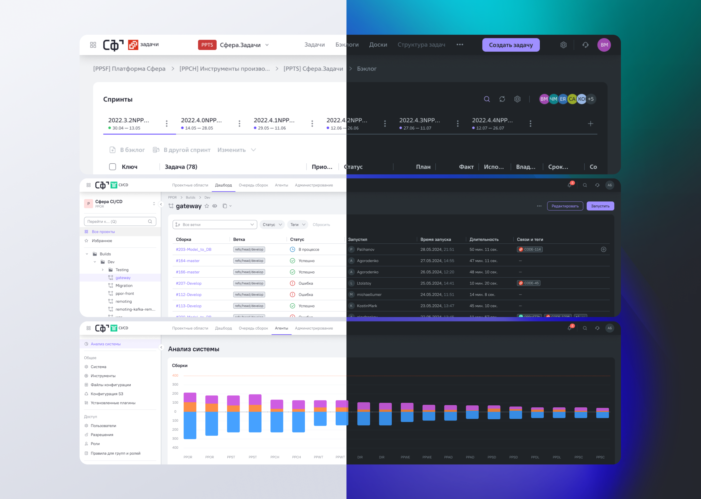
Почему платформа
Запрос рынка на импортозамещение. В крупных продуктах появилась потребность на замещение больших функциональных областей. Дробление на отдельные продукты не гуманно по отношению к пользователю и дорого со стороны разработки.
Требования
Замещаемые продукты содержат много данных, а продуктов включенных в платформу 40+. Поэтому платформа должна предоставлять:
- разнообразие в отображении информации;
- быструю и прозрачную навигацию;
- отсутствие проблем у пользователей при работе с основными сценариями (при их сильной нагруженности данными).
На ранних этапах проектирования опирались на бенчмаркинг, позже фокус сместился на работу с данными. Глобально сократили расстояние между элементами для больше плотности информации в экране и заменили шрифт — согласно исследованиям около 70% пользователей уменьшают экран на 10-15%, чтобы видеть больше информации, нужен был шрифт не теряющий читабельность при уменьшении экрана.
Такие задачи требуют глубокого анализа продуктов и тестирования решений.
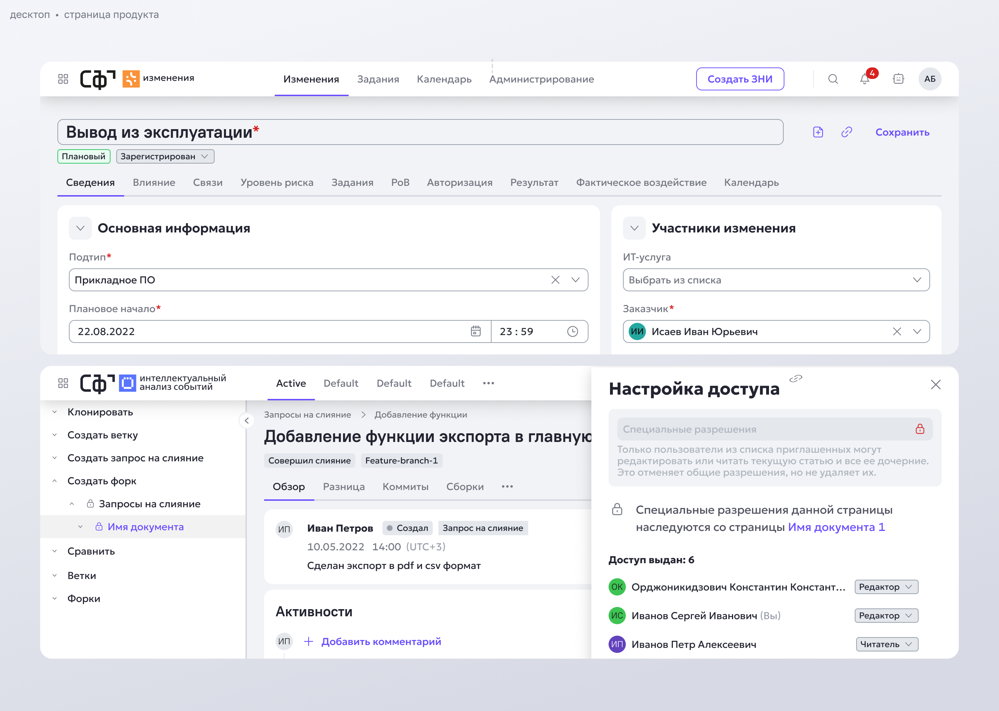
Дизайн
Сфера — это экосистема, и формировать решения только на основе конкурентов недопустимо.
Дизайн платформы учитывает не только анализ конкурентов, но и требует адаптации к UX/UI экосистемы, чтобы избежать путаницы и ошибок у пользователей.
Для обеспечения понятного перемещения между продуктами и декомпозиции информации основой платформы стала навигация и модули, которые позволяют делать ответвления по сценарию не разрывая его.
Навигация
Пользователь перемещается на нескольких уровнях, которые важно учитывать:
- между продуктами платформы;
- между модулями продукта.
Второй уровень предполагает более частое обращение. Проанализировав основные действия по продуктам получился перечень сквозного функционала, основных действий и понимание объема вложенности. Сформированное решение мы пропустили через исследование.
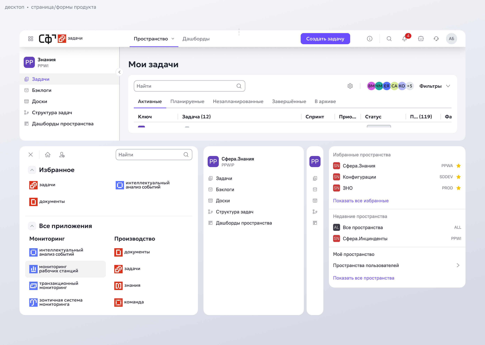
Информационные модули
Имеют частичное отношение к навигации, так как позволяют снижать вложенность продуктов, деля ее или на шаги или давая возможность что-то уточнить не уводя со сценария. Модули помогают фокусироваться на действиях в текущий момент, но при этом мы можем легко вернуться к основному сценарию работы.
Их применение четко регламентировано:
- создание объекта;
- редактирование объекта;
- просмотр детализации без ухода со страницы.
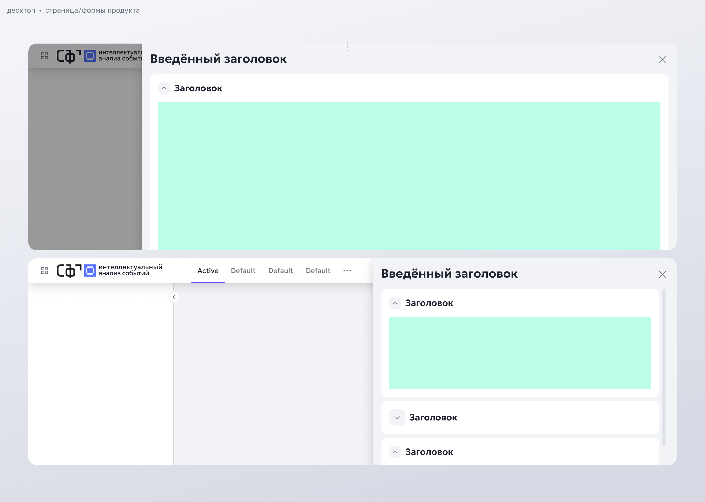
Важно сохранять ощущение дружелюбной и эмоциональной среды. Это позволяет дольше сохранять концентрацию при работе и допускать меньше ошибок.
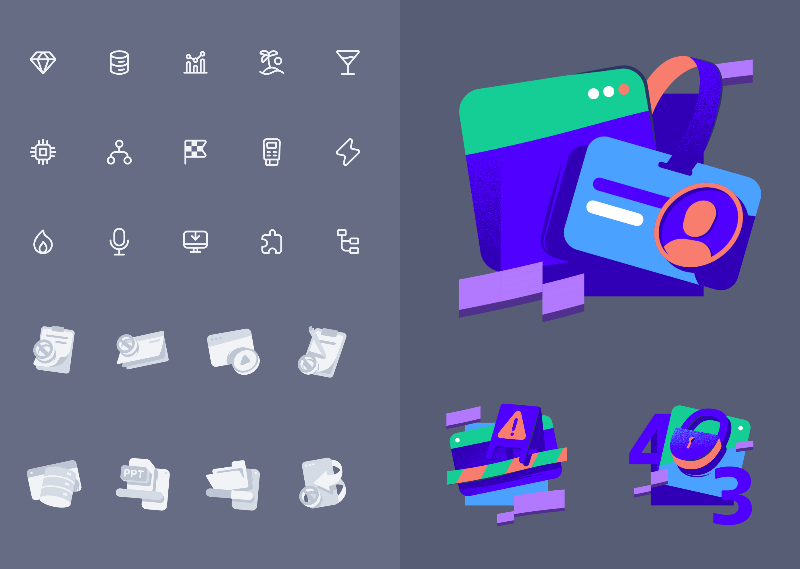
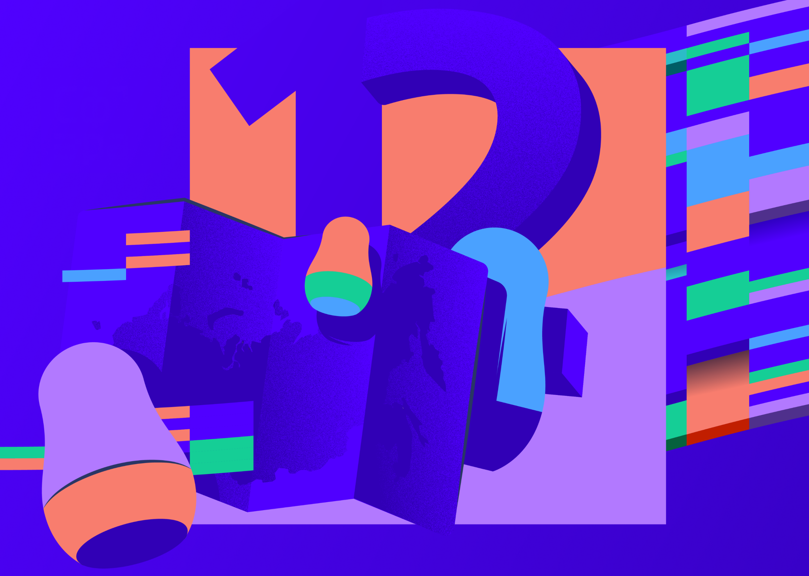
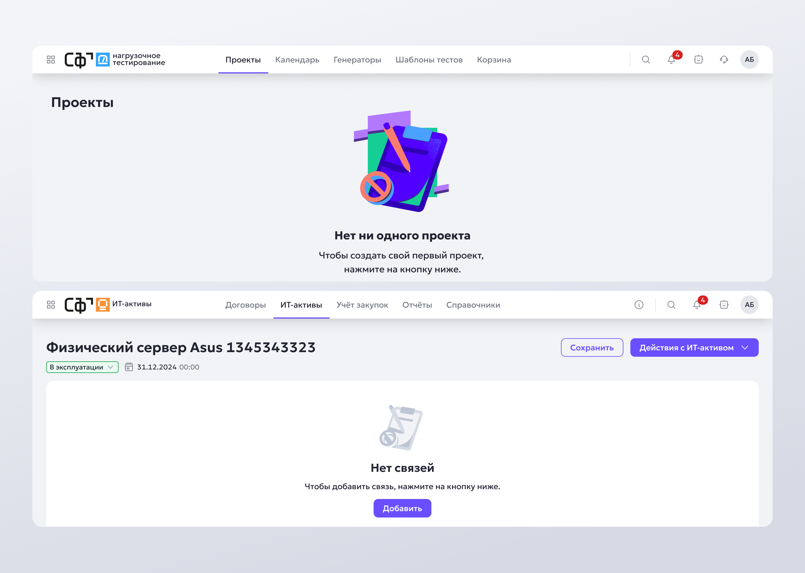
Следим за дизайном
Оценкой удовлетворительности дизайна служат общие замеры UMUX и SCAT. На текущий момент сохраняем хорошую позитивную динамику, увеличивая показатели в среднем на 9-10%.
Замеры проводятся раз в квартал и после обработки переносятся на граф. Там отображается общий уровень удовлетворенности и декомпозиция оценки в пределах задаваемых вопросов.
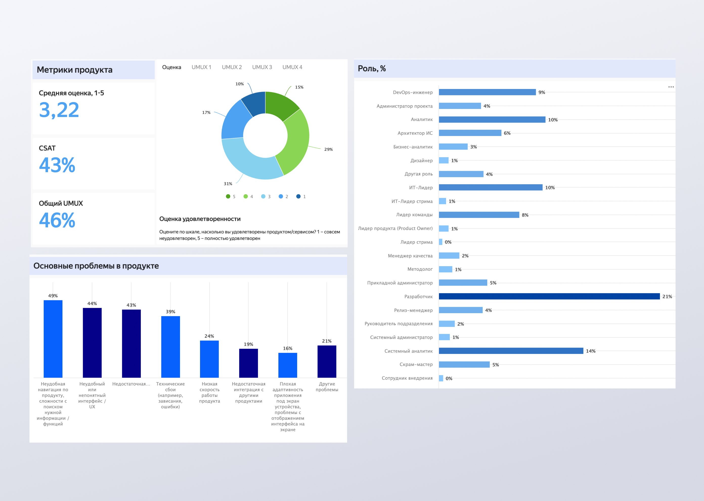
Синхронизация
Сфера — высоконагруженный В2В продукт, где работа может занимать до 50% времени. Во время работы происходит постоянное переключение между 3-4 продуктами. Предсказуемость поведения системы существенно влияет на скорость и качество работы.
Для повышения предсказуемости платформа использует единые компоненты и синхронизацию на уровне паттернов. Анализ выявил переиспользуемые паттерны, что сокращает время на дизайн-задачи на 70%, time-to-market — 20%.
Паттернизация происходит на разном уровне, начиная от тех, которые свойственны конкретным страницам, до тех, которые навигируют по всей платформе в целом. Паттерны объеденены в группы для их централизованного развития и пополнения.
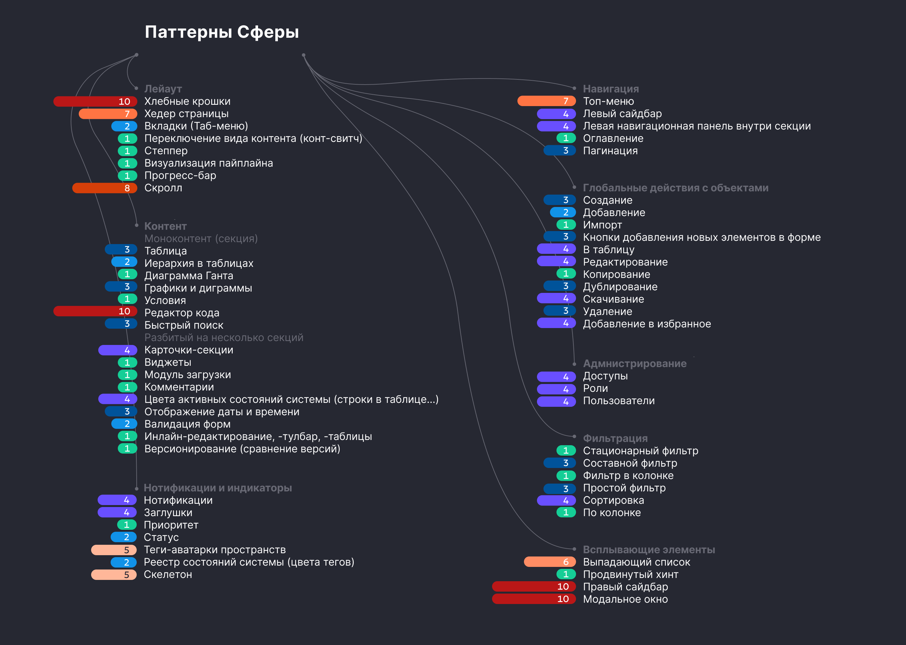
Процессы
Говоря об экосистеме было необходимо сформировать среду, в которой она возможна. Формирование, распространение, поддержка и влияние.
Был сформирован процесс общего ревью и его влияния на поставку, где дизайн подтверждал переиспользуемость паттернов платформы. Созданы каналы для распространения информации об обновлениях паттернов. Подход к формированию паттернов похож на opensource в разработке — дизайнеры продуктовых команд выделяют часть копасити на работу с ними. Данный подход помочь увеличить объем проработки паттернов на 10%.
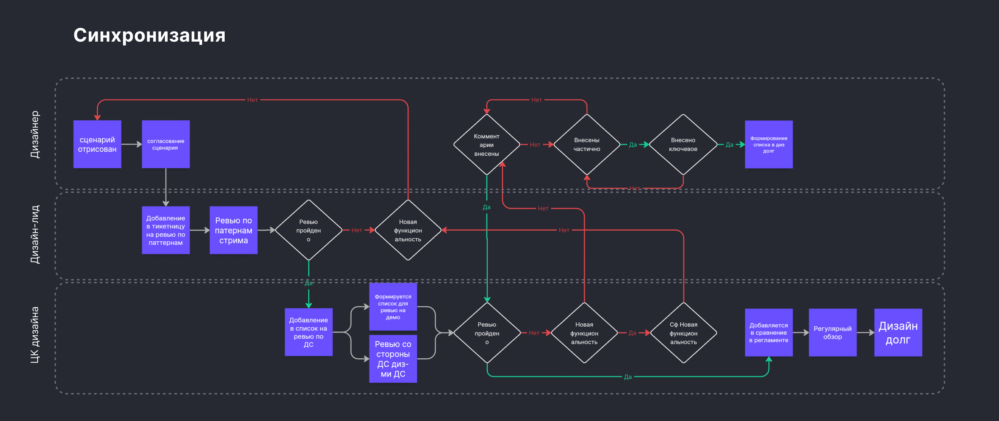
Исследование
Исследование являясь важной частью процесса был реорганизован в силу малых ресурсов и большой потребности. Исследование валидируется командой исследователей, но не всегда ей проводится. 70% исследований делают дизайнеры. При развитии дизайнеров важно учитывать этот факт.
Донесения задач дизайна во фронт — приоритетные задачи для платформы передаются командам через квартальное планирование. Предварительно эти задачи заводятся в общем пространстве и дизайнерам остается их только передать и получить ответ по статусу задачи.
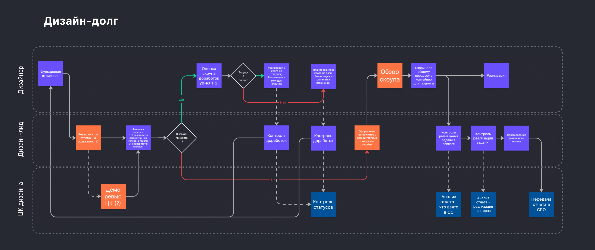